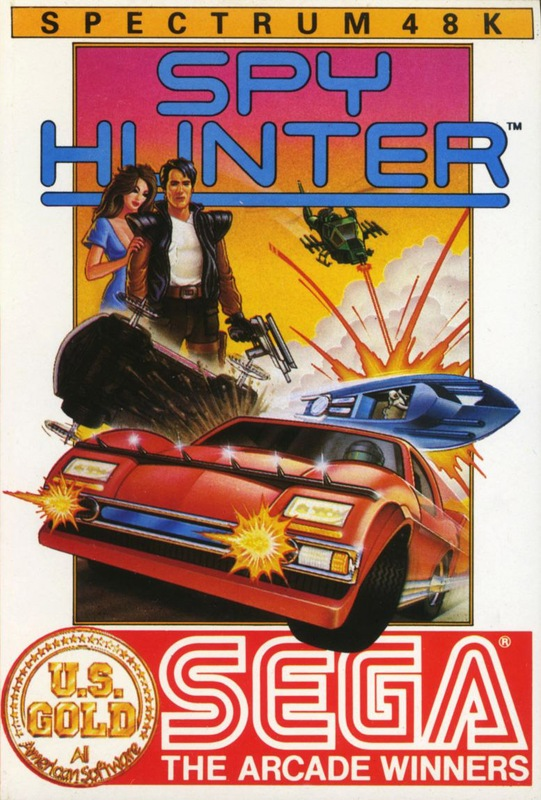
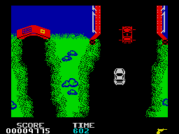
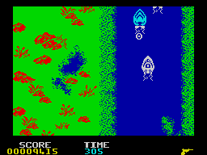

Spy Hunter


{kind=link}

| Publisher: | US Gold |
| Price: | £7.95 |
| Year: | 1985 |
| Source: | CRASH, Issue 16 |

This is US Gold’s officially licenced Spectrum version of the American Bally Midway hit with you playing the Spy Hunter. Spy Hunter is a kind of road racer-cum-river raider, an all action shoot em up of the old school. There are numerous sections to the game, but basically Spy Hunter takes two forms. It starts on a road as your Weapons Van pulls up at the side of the road to allow your Spy Car to roll down the ramp and onto the road. You’re then on your own, guiding the car along the torturous roads, pursued by various enemies, each with their own characteristics. These can be destroyed by ramming them into the side of the road or shooting them.

The second form occurs if you take the correct side road down to the boat house — driving into it automatically converts the Spy Car to an amphibious vehicle, and the chase continues on the water.
While you are on the road there is a chance to ‘dock’ with the Weapons Van, whereupon the Spy Car’s weapons are exchanged or added to. The weapons carried are displayed at the bottom of the playing area, and an element of strategy is involved in ensuring the right weapon is on board for the particular task in hand.
The enemies include the Road Lord (bullet proof — must be rammed off the road); Switch Blade (buzz saw hubcaps — nasty); Barrel Dumper (drops barrels in your path in the water); The Enforcer (fires a shotgun); The Copter (drops bombs on your car/boat); and Doctor Torpedo (fires torps at the Spy Boat).
Guiding your vehicle is tricky, since the roads/waterways twist and turn, branching off into what may well be dead ends. Occasionally a message on the road may warn you that a road is closed and you should take a detour. Control of the Spy Car allows left/right movement as well as accelerating or braking.
CRITICISM

‘It’s nice to see that US Gold are continuing with their arcade reproductions of Sega’s top hits from the States. I must admit to not seeing Spy Hunter in the arcades — yet. Whatever the arcade version is like, this Spectrum version seems to be an extremely playable game. The scrolling graphics are some of the best I’ve seen on the Spectrum and work well — they are colourful and very detailed. Progressing through the game I found that the enemy grew increasingly mean, and it required more skill, but this was a gradual progression as you are teased more and more into the game. This is a good feature of Spy Hunter. This game has enormous playability and I was totally captured in a different land of action. It’s the sort of game I’d come back to months later.’
‘An interesting point to all these US Gold releases of older American hits, is that they seem, single handedly, to be creating a rebirth of simpler arcade shoot em ups. Spy Hunter is definitely a very simple idea, but the speed, variety and ferocity of the action makes it huge fun to play. The large, well designed graphics move very well, and I particularly liked the way some of the nasties spin off the road. Spy Hunter combines all the elements of a good mad racer game (although there is no 3D perspective, everything being seen from above) and a fast shoot em up. I think it’s moderately addictive because the increasing difficulty is well built in to the game and the screens are variable enough to add interest, but most of all, it’s a good zapping game.’
‘Spy Hunter is a fairly good arcade to Spectrum conversion. The graphics are fairly good though the sound is used poorly for such a great game. Of all the Zap em up games I’ve ever played Spy Hunter is a firm favourite amongst them. Playability is high because there is such a lot going all the time. I don’t think that this game will keep anyone’s interest for weeks and weeks because it’s a fairly simple game to get into and to play (this is also a point in its favour because it can be played by virtually anyone). I particularly liked the river scenes, they seemed more varied than the ones on the CBM 64 (I know I’m not meant to mention that calculator but I couldn’t resist it considering I prefer the Spectrum version of Spy Hunter). If you want a good shoot em up Spy Hunter is well worth the money. Overall a good game that should keep you all amused for a while.’
COMMENTS
| Control keys: | User definable, four directions and fire required |
| Joystick: | Kempston, Sinclair 2, Cursor type |
| Use of colour: | Very varied, bright and sharp |
| Graphics: | Attractive, good size and reasonably smooth vertical scrolling |
| Sound: | Spot effects, average |
| Skill levels: | 2, novice and expert |
| Lives: | 5 |
| Screens: | Continuous scrolling |
| General Rating: | It may not have massive lasting appeal (although it is a good hi-score game), and it certainly isn’t a thinking game, but loads of fun to play. |
| Use of Computer: | 90% |
| Graphics: | 82% |
| Playability: | 89% |
| Getting Started: | 88% |
| Addictive Qualities: | 80% |
| Value For Money: | 81% |
| Overall: | 89% |